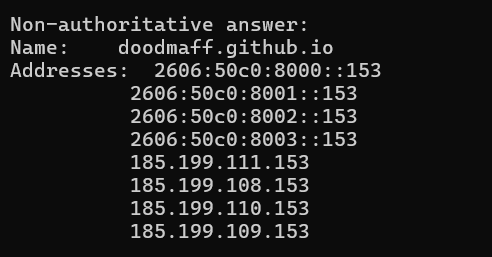

Networking Concepts
Deployment & Technical Documentation
When someone enters my Github Pages domain into a browser, the DNS looks up the IP address associated with the domain.
If the address is not already cached, a DNS resolver contacts Github's DNS servers to find the correct IP address
Once the IP address is returned, the broswer connects to Github's servers and loads my website.
My domain currently resolves to the following IPv4 & IPv6 addresses on the GitHub network: 2606... being IPv6 and 185... being IPv4
HTTP vs HTTPS: My site uses HTTPS rather than plain HTTP. This means all traffic between the browser and GitHub's servers is encrypted via TLS, preventing anyone from intercepting or tampering with the data in transit.
Status Codes: When the page loads successfully it returns 200 OK. A 304 Not Modified response also appears because the browser loads the page from its local cache instead of re-downloading it, which speeds up load time.
Request & Response Headers: When a user visits the website, the browser sends a GET request to the server along with headers like If-None-Match and If-Modified-Since to check if the page has changed.
The server responds with 304 Not Modified, which means the page has not been updated and can be loaded from the browser's cache instead of being downloaded again.
The Cache-Control: max-age=600 header allows the browser to store the page for 10 minutes, helping the website load faster.